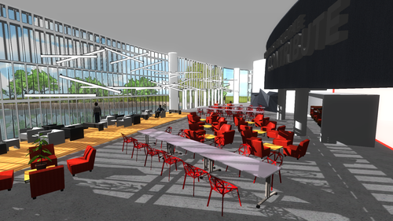
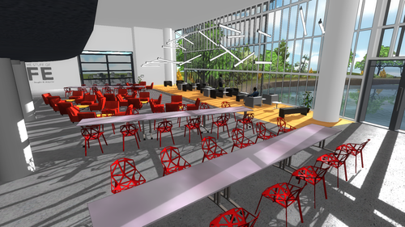
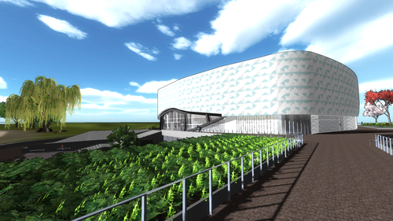
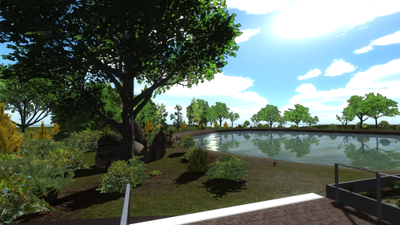

From AutoCAD to Oculus
January 06, 2015
Virtual reality architectural walk throughs are the future, and what better way to experience them than with an Oculus Rift?! Here’s a quick demo of how I went from AutoCAD drawings to a virtual reality application using the Oculus Rift for a basic architectural walk through of the new engineering building under construction at York University.
First Step: Get Those AutoCAD Files
The best way to make the space you want to recreate seem realistic is to get your hands on the real floor plans of the space. So when I was asked to model the new building at York University, I needed to get my hands on some floor plans first. Once you have those you can open up any 3D modeling software and start building.
Building Your Model
You can bring in the CAD files into any 3D modeling software, I used Google Sketchup because it’s free and easy to use. I recommend 3DS Max if you have the time to learn it. Lay out the CAD files flat on the X-Z axis. Now the easy part, trace the floor plans! It’s that simple, trace over any walls you want shown in your virtual walk through, omit any unnecessary walls (don’t kill your polygon count unless you have to). Once you’ve traced over all the walls, simply use the protrude tool to literally lift your walls off the ground along the Y axis and give them some height. Now you have the outline of your space, simply go in and add any other details you need (windows, doors, basic furniture), which can all be done in your 3D modeling software, either by importing from an outside source or by modeling them yourself. Once you’re happy with the way your model looks in your 3D modeling software, it’s time to export to Unity. Unity is easy; it will accept .FBX, .OBJ, .DAE and a ton other formats, but will not accept sketchup files. That means you need to export your model as one of the acceptable types. FBX works very well in Unity since it conserves meshes and components when brought into Unity. Save your exported model and move on to Unity!
Making it Virtual in Unity
You’re in the home stretch, now the fun really begins. Create a new project in Unity, create a new scene and add a first person player controller. Before anything, add a terrain. Any old terrain will do for now. Import your model, scale it and drag it into your scene and onto your terrain. Now is your chance to go wild! Add textures, shadows, lighting, assets, and terrain features to make your scene beautiful. Get as detailed as you want. Always periodically run your scene and hit the space bar in play mode to check your frame rates. If you’re dropping below 30 frames per second, you’re lacking in rendering capabilities and might want to find some ways to bring that back up (
adding fog is always a good cheat). Once you’re happy with your model in Unity you can add a script which will give your character a designated path to walk in. This script was written in C#, but Unity also plays well with JavaScript.
public Vector3 point1;
public Vector3 point2;
public Vector3 point3;
public Vector3 ovrLocation;
public bool move = true;
// Use this for initialization
IEnumerator Start () {
var pointStart = transform.position;
while (move) {
yield return StartCoroutine(MoveObject(transform, pointStart, point1, 3.0f));
yield return StartCoroutine(MoveObject(transform, point1, point2, 3.0f));
yield return StartCoroutine(MoveObject(transform, point2, point3, 3.0f));
ovrLocation = point3;
move = false;
nextScene();
}
}
IEnumerator MoveObject(Transform thisTransform, Vector3 startPos, Vector3 endPos, float time)
{
var i= 0.0f;
var rate= 0.75f/time;
while (i < 1.0f && move == true) {
i += Time.deltaTime * rate;
thisTransform.position = Vector3.Lerp(startPos, endPos, i);
yield return null;
}
}
void nextScene(){
Application.LoadLevel(0);
}
Now it’s time to build it as an application for Windows/Linux/Mac and see it in all it’s glory with the Oculus.
Piece De Resistance; The Oculus Rift
Connecting the Oculus Rift is incredibly easy. Unity Pro supports Oculus (just download the unity
integration package), so it’s literally just a plug-change resolution-and-play kind of deal. Hit play and there you have it! A perfect virtual reality architectural walkthrough using the Oculus Rift for maximum awesomeness.


Extra Notes
If you don’t want your character to have a designated path, meaning the character can roam free around the scene, disable the way points script and connect a PS3 controller to your computer. Again it’s very simple to connect and much easier (and more fun) to use than the traditional keyboard. This tutorial assumes you have basic knowledge with your 3D modeling software, with Unity Pro, and know how to write a little something in C#. If you’re totally new at Unity, check out some simple tutorials before diving into an architectural walk through. Once you feel ready, have fun with it!

